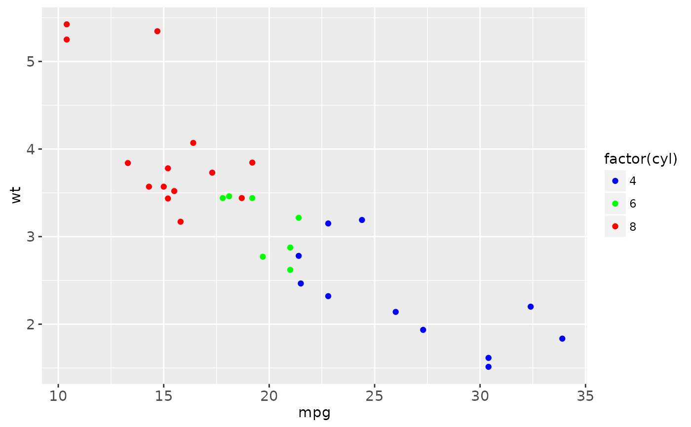
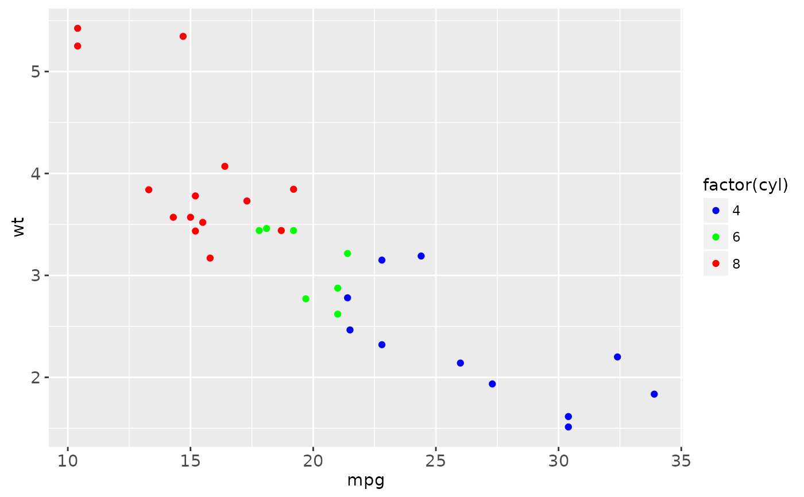
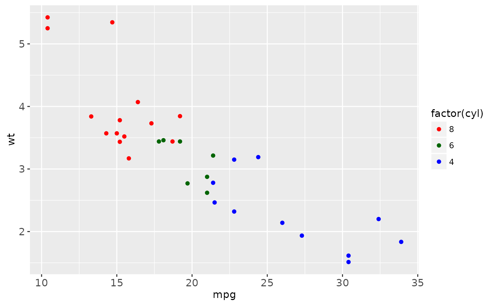
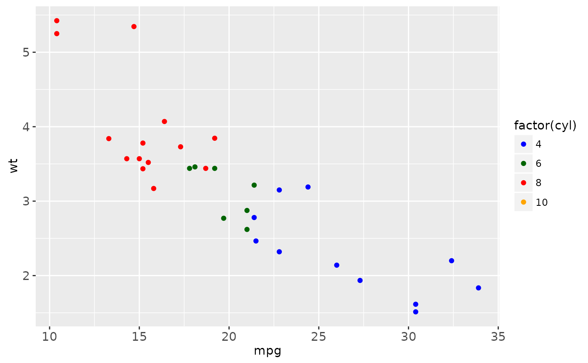
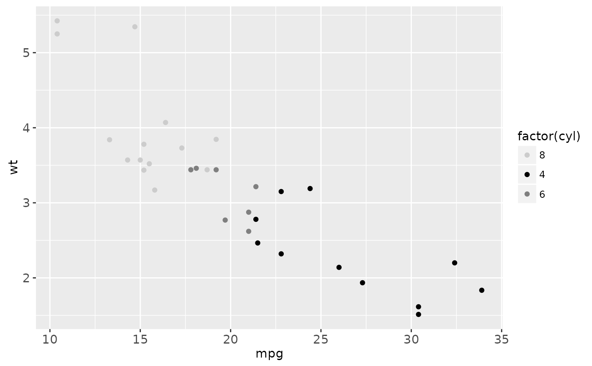
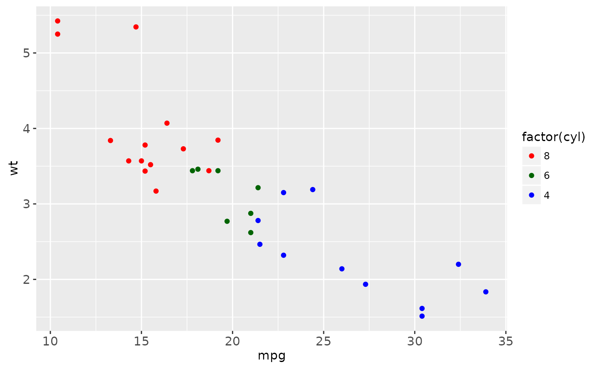
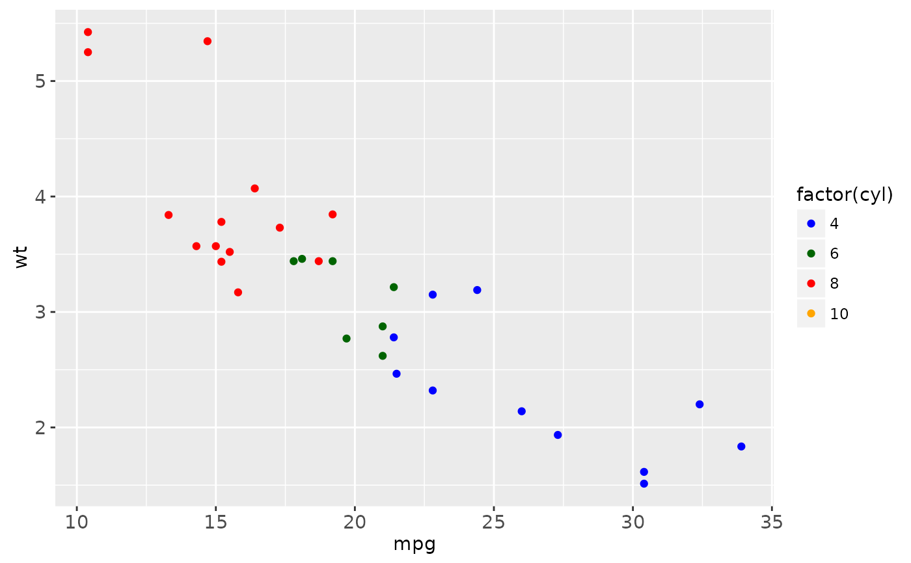
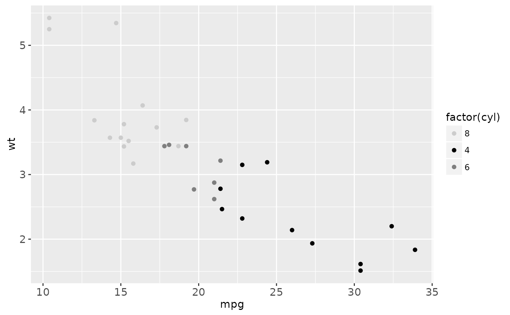

Create your own discrete scale.
Usage
scale_colour_manual(..., values)
scale_fill_manual(..., values)
scale_size_manual(..., values)
scale_shape_manual(..., values)
scale_linetype_manual(..., values)
scale_alpha_manual(..., values)Arguments
- ...
common discrete scale parameters:
name,breaks,labels,na.value,limitsandguide. Seediscrete_scalefor more details- values
a set of aesthetic values to map data values to. If this is a named vector, then the values will be matched based on the names. If unnamed, values will be matched in order (usually alphabetical) with the limits of the scale. Any data values that don't match will be given
na.value.
Examples
# \donttest{
p <- ggplot(mtcars, aes(mpg, wt)) +
geom_point(aes(colour = factor(cyl)))
p + scale_colour_manual(values = c("red","blue", "green"))
 p + scale_colour_manual(
values = c("8" = "red","4" = "blue","6" = "green"))

# With rgb hex values
p + scale_colour_manual(values = c("#FF0000", "#0000FF", "#00FF00"))
# As with other scales you can use breaks to control the appearance
# of the legend
cols <- c("8" = "red","4" = "blue","6" = "darkgreen", "10" = "orange")
p + scale_colour_manual(values = cols)
p + scale_colour_manual(values = cols, breaks = c("4", "6", "8"))
p + scale_colour_manual(
values = c("8" = "red","4" = "blue","6" = "green"))

# With rgb hex values
p + scale_colour_manual(values = c("#FF0000", "#0000FF", "#00FF00"))
# As with other scales you can use breaks to control the appearance
# of the legend
cols <- c("8" = "red","4" = "blue","6" = "darkgreen", "10" = "orange")
p + scale_colour_manual(values = cols)
p + scale_colour_manual(values = cols, breaks = c("4", "6", "8"))
 p + scale_colour_manual(values = cols, breaks = c("8", "6", "4"))

p + scale_colour_manual(values = cols, breaks = c("4", "6", "8"),
labels = c("four", "six", "eight"))
# And limits to control the possible values of the scale
p + scale_colour_manual(values = cols, limits = c("4", "8"))
p + scale_colour_manual(values = cols, limits = c("4", "6", "8", "10"))

# Notice that the values are matched with limits, and not breaks
p + scale_colour_manual(limits = c(6, 8, 4), breaks = c(8, 4, 6),
values = c("grey50", "grey80", "black"))

# }
p + scale_colour_manual(values = cols, breaks = c("8", "6", "4"))

p + scale_colour_manual(values = cols, breaks = c("4", "6", "8"),
labels = c("four", "six", "eight"))
# And limits to control the possible values of the scale
p + scale_colour_manual(values = cols, limits = c("4", "8"))
p + scale_colour_manual(values = cols, limits = c("4", "6", "8", "10"))

# Notice that the values are matched with limits, and not breaks
p + scale_colour_manual(limits = c(6, 8, 4), breaks = c(8, 4, 6),
values = c("grey50", "grey80", "black"))

# }